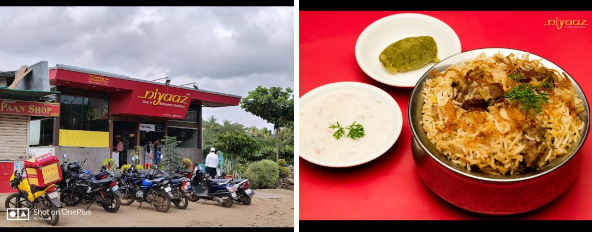
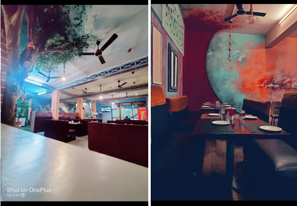
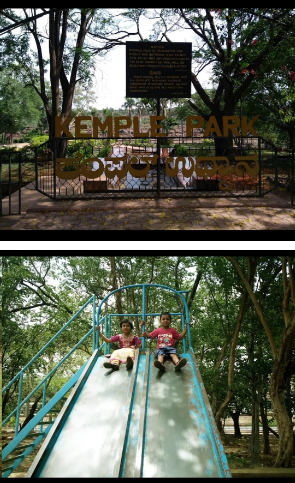
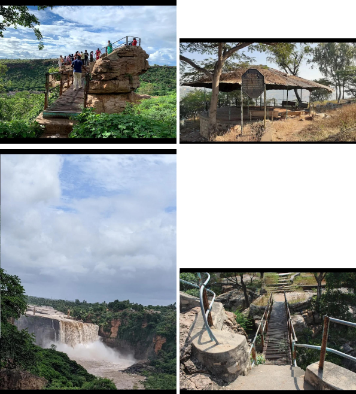
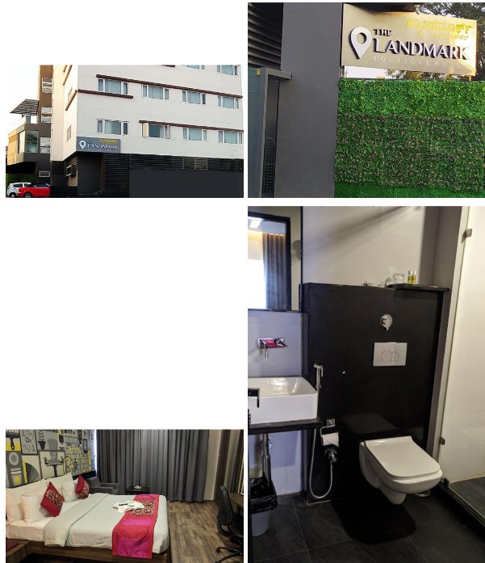

NIYAZ Gokak is the awesome place foodies. Ambience is OK food is exceptionally well. Especially for kebabs and burying indum style cooking. This restaurant offers its guests Chinese and Indian cuisines. At Niyaaz, the recipe of perfectly cooked biryaniis a story that ends up with a really good meal. The accommodating staff works hard, stays positive and makes this place great. The terrific service displays a high level of quality at this place. Categories-Biryani restaurant, Chinese Restaurant, IndianRestaurant, NonVegetarian Restaurant. Order food online from Niyaaz Restaurant, Gokak Locality, Gokak and get great offers and super-fast delivery on Zomato. Gokak niyaz contact number 08332226133.

The Underground Palace
Underground palace in gokak, belagam underground palace listed under restaurant in gokak, belgaum. check address, location, contact number, ratings and reviews, photos, maps etc on justdial. Location and overview underground palace in gokak, belgaum is are liable name inindustry as they aim to deliver the best experience to the customers. This has helped them to build up a loyal customer base. They started their journey in and ever since, they have ensured that the customer remains at the centre of their business operations and philosophy. As they are located in favourable neighborhood, exactly at hattikattige building, gokakfalls road- 591307. It is easy to locate underground palace in map. For any kind of assistant and questions, it is best to contact them directly during their business hours. It is the pure veg restaurant in gokak

Parks near gokak falls
Kemple park
Situated in the heart of city. Luxurious accommodation coupled with 3 dining options. Just 2 minutes drive from the busterminal. The Landmark Hotel in Gokak is one of the most trustworthy names in the field. They have received a 4.1 rating from their coustomers. The Landmark Hotel is a great choice for travellers looking for a budget accomodation in Gokak. It is located in Vivekanand Nagar. The Landmark hotel Gokak with three star facilities is situated in the heart of the city. Luxurious accommodation coupled with 3 dining option. The Landmark hotel contact number: 09900162720.

Gokak falls view point
Gokak Waterfalls is one among the recognized tourist attractions by the Government in Belagavi district. Gokak Waterfalls is situated 6 Kms from Gokak City. Hanging bridge, Mahalingeshwar temple, Heritage buildings of Gokak Mills are the various other attractions at this spot.
Tourists come here in large numbers during Rainy season, Sundays and other holidays. It’s a good picnic spot as there is a garden and established viewpoints to have splendid look of the waterfalls.
Great place to visit to spend seeing the big waterfall. During rainy seasons the water levels swell up and flow is also quite forceful and speedy, so care must be exercised. Water falling from about 70 metre height in to the gorge make it beautiful and enormous. It can get crowdy at most times and care must be exercised at all times as there is no rails for protection and water flow is unstoppable.

Hotels near gokak falls
Hotel Landmark
Situated on the Gokak Falls Road, Kemple Park is the perfect destination for you to visit. The mist formed by the falling water of the falls and the scenic splendor of the place is simply breath-taking. The mesmerizing beauty of the waterfall and the splendid forest cover makes it an ideal trekking destination. It is also a popular picnic spot for the tourists. The park fascinates the visitors with its unique surroundings that comprise lakes and lush green cover. You can also relax beside the water canal, which adds to the beauty of the park. Watch the flock of birds can be easily observed near the water canal and the scenery is quite eye-catching at sunset when they fly back to their nests. Enjoy at the Kemple Park and make your visit to Belgaum memorable.

Hotel Gokak Resort
Conveniently located on the Gokak falls road, not very far off from the amazing Gokak falls. Nearest airport is Belgaum. There are flight available from Mumbai. Nearest big station is Ghataprabha where all the trains stop. There is another small station Gokak Road, where most of the good trains do not halt. From airport it is 90 minutes and from Ghataprabha, it is 30 minutes journey. If you want to visit Gokak falls, at a very reasonable price, this is a nice hotel. Staff are very polite and helpful, rooms are good. Excellent service. food which is very nice and tasty.